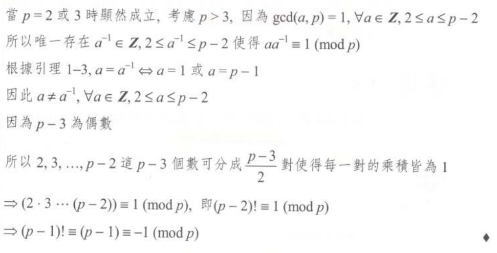
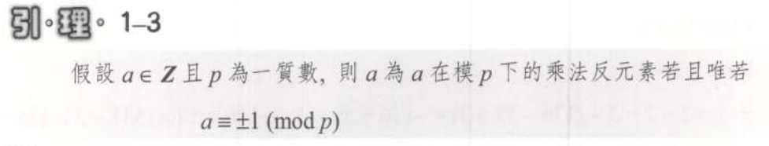

Question
97 逢甲資工 - 多少因數問題
98 交大資訊 - 滿足最小完全次方,完全立方問題
92,97 政大資料 - 多少個0問題
Factor and relative prime
因數和互質定義
Euclidean Algorithm
歐幾里得演算法
Fermat's little theorem 和 Euler推廣
費瑪小定理和歐拉解釋
-
歐拉推廣的題目
prime number
Define
\(
p\in Z^+, p\geq 2
\)
except 1
Composite number is combine by prime number.
Notice
-
2 is the only one number that even number and the smallest prime number.
Other prime number is odd.
-
1 is neither composite nor prime number.
-
If \( p \) is factor from n and is a prime number.
It is a prime number from \( n \).
Suppose \( n\in Z^+ \)
\( n \) is a composite.
\( \exists p(p\mid n) \)
Guess prime factor
Suppose a \( n \) is a composite.
There have a \( p \leq \sqrt{n}\)
Example
Suppose \( n=40 \).
\(
\sqrt{40}<7
\)
\(
\text{ Guess prime number } 2,3,5
\)
to divde 40.
\(
\rightarrow 40 = 2^3 \times 5
\)
Example
Show that \( 151 \) is a prime number.
Guess less and equal than \( \sqrt{151} \) prime number.
\( 2,3,5,7,11 \)
all of guess number cannot divide 151.
\(
\therefore 151 \text{ is a prime number.}
\)
Number of factor
Suppose \( n=p^{e_1}_1p^{e_2}_2\dots p^{e_k}_k \)
number of factor is \( (e_1+1)(e_2+1)\dots(e_k+1) \)
Relatively prime
Suppose
\(
m,n\in Z
\)
\(
\gcd(m,n)=1
\)
Suppose
\(
m,n\in Z
\) and
\(
m=nq+r
\)
\(
q,r\in Z
\)
\(
\rightarrow
\gcd(m,n)=\gcd(n,r)
\leftrightarrow
\gcd(m,n)=\gcd(m,m \mod n)
\)
Diophantine 方程式
假設\(
a,b,c\in \mathbb{Z}^+
\)，則\(
ax+by=c
\)有整數解\(
(x=x_0\wedge y=y_0)
\leftrightarrow
\gcd(a,b)|c
\)。
題目
證明代數基本定理的唯一性
Ans.(利用矛盾法)
假設\(
n\geq 2
\)為一個正整數，若\(
n
\)，有兩種質因數乘積的寫法:
ex.
\(
n=p_1p_2\dots p_s
,\;
n=q_1q_2\dots q_t
\)
其中\(
p_1\leq p_2\leq p_3\leq\dots \leq p_s,\;
q_1\leq q_2\leq q_3\leq\dots \leq q_t,\;
\)
\(
\Rightarrow
n=p_1p_2\dots p_s
=q_1q_2\dots q_t
\)
則\(
\{\displaystyle\frac{q_1q_2\dots q_t}{p_i}|i=1,2,\dots,s\}
\)內的所有元素應皆為整數，但寫成兩種質因數乘積，必有不能整除的值，而產生矛盾。
\(
\therefore
\)
整數\(
n
\)
只能寫成一種質因數乘積。
題目-93 中央資管
證明\(
\sqrt{2}\)
為無理數
Ans.(利用矛盾法)
假設\(
\sqrt{2}
\)為有理數，\(
\exists m,n \in \mathbb{Z}^+
\), \(
\sqrt{2}=\frac{m}{n}
\)且\(
\gcd(m,n)=1
\)
\(
\Rightarrow
(\sqrt{2})^2
=
(\frac{m}{n})^2
\)
\(
\Rightarrow
2=\frac{m^2}{n^2}
\)
\(
\Rightarrow
2n^2=m^2
\)
\(
m^2
\)是可以被\(
2
\)整除的
\(
\Rightarrow
2|m^2
\)
因為\( 2 \)為質數，\( m^2 \)的質因數乘積裏頭一定有二的指數個2，這樣\( m^2 \)開根號後得出的\( m \)會是整數，所以\( m \)也可以被\( 2 \)整除
\(
\Rightarrow
2|m
\)
將\( m \)寫成兩數相乘\(
\Rightarrow
m=2k,\exists k\in Z^+
\)
代回\( 2n^2=m^2 \)
\(
2n^2=(2k)^2=4k^2
\)
\(
\Rightarrow
n^2=2k^2
\)
同理
\(
n^2
\)是可以被2整除
\(
\Rightarrow
2|n^2
\)，因2為\( n^2 \)且條件是n為整數，\( n^2 \)有兩個2以上，則\( 2|n \)。
這樣已知\( 2|m \)和\( 2|n \)，\( m \)和\( n \)的公因數有2，與\( \gcd(m,n)=1 \)相互矛盾。
所以\( \sqrt{2} \)為無理數。
Mod 運算
同餘運算
Multiplicative Inverse(乘法反元素)
乘法反元素
Wilson定理(Wilson's theorem)
Suppose \(
p
\)
is a prime.Then
\[
(p-1)!\equiv-1\pmod{p}
\]
證明

補充

這樣假設
\(
n\in\mathbb{Z}^+
\)，若\(
(n-1)!\equiv-1\pmod{n}
\)，則\(
n
\)為質數。
證明:
利用反證法，假設\( n \)為組合數，則\(
(n-1)!\not\equiv-1\pmod{n}
\)，
因為\( n \)為組合數，那有一個質數\( p \)，使得\( p|n \)，這樣在\((n-1)!\)展開的乘積裡會有\( p \)這個值，那\( (n-1)!\equiv0\pmod{p}\)和\( (n-1)!\equiv0\pmod{\frac{n}{p}}\)，也就\(
(n-1)!\not\equiv-1\pmod{p\times\frac{n}{p}}
\)成立。
因此，
\(
n\in\mathbb{Z}^+
\)，若\(
(n-1)!\equiv-1\pmod{n}
\)，則\(
n
\)為質數。
可用來檢測這個值是否為質數，如果不符合此定理，這個值就不是質數。
引理
假設
\(
a,b,c,n\in\mathbb{Z}
\)，若\(
\gcd(n,c)=1
\)，則\[
a\equiv b\pmod{n}
\Leftrightarrow
ac\equiv bc\pmod{n}
\]
證明
(\( \Rightarrow \))
因為\( a\equiv b\pmod{n} \)，所以\( n|(a-b) \)成立，那\( (a-b) \)乘上一個與\( n \)互質的數，得\( n|(a-b)c \)還是成立。
\( n|(a-b)c=n|(ac-bc) \)，因此\( ac\equiv bc\pmod{n} \)。
(\( \Leftarrow \))
因為\( ac\equiv bc\pmod{n} \)，所以\( n|(ac-bc) =n|c(a-b)\)，又因為\( c \)與\( n \)互質，所以\( n|(a-b) \)成立，因此\( a\equiv b\pmod{n} \)。
左右式推導成立，所以\( a\equiv b\pmod{n}\Leftrightarrow ac\equiv bc \pmod{n}\)。
Euler \( \phi \)-函數
定義
假設\( m\in\mathbb{Z}^+ \)，定義Euler \( \phi \)-函數(Euler's \( \phi \)-function) \( \phi(n) \)為\( \{1,2,\dots,n-1\} \)中與\( n \)互質的元素個數，函數\( \phi(n) \)也稱為Euler's totient function。
例題
\( \phi(7)=6 \)
\( \phi(8)=\phi(10)=\phi(12)=4 \)
\( \phi(4)=\phi(6)=2 \)
互質個數-排容原理
排列組合-手寫-相關排列組合
假設\( n=p_{1}^{e_1}p_{2}^{e_2}\dots p_{k}^{e_k} \)
為\( n \)的質因數分解，則\( \phi(n)=n\displaystyle\Pi_{j=1}^k(1-\frac{1}{p_j}) \)
定理
假設\(
p\in\mathbb{Z}^+
\)，則\( \phi(p)=p-1\Leftrightarrow p \)是質數。
證明
\(
(\rightarrow )
\)
利用矛盾法，如果\( p \)是組合數，那會有一個\( q \)，使得\( q|p,\;2\leq q\leq(p-1) \)，則\( \gcd(p,q)=q\neq 1\)，因而\( \phi(p)\neq p-1 \)。
\(
(\leftarrow)
\)
如果\( p \)是質數，則\( \gcd(m,p)=1, \forall m=1,2,\dots ,p-1 \)，所以\( \phi(n)=p-1 \)。
假設\( p \)為質數，則\( (p-2)!\equiv 1\pmod{p} \).
RSA公鑰密碼系統
RSA public key cryptosystem